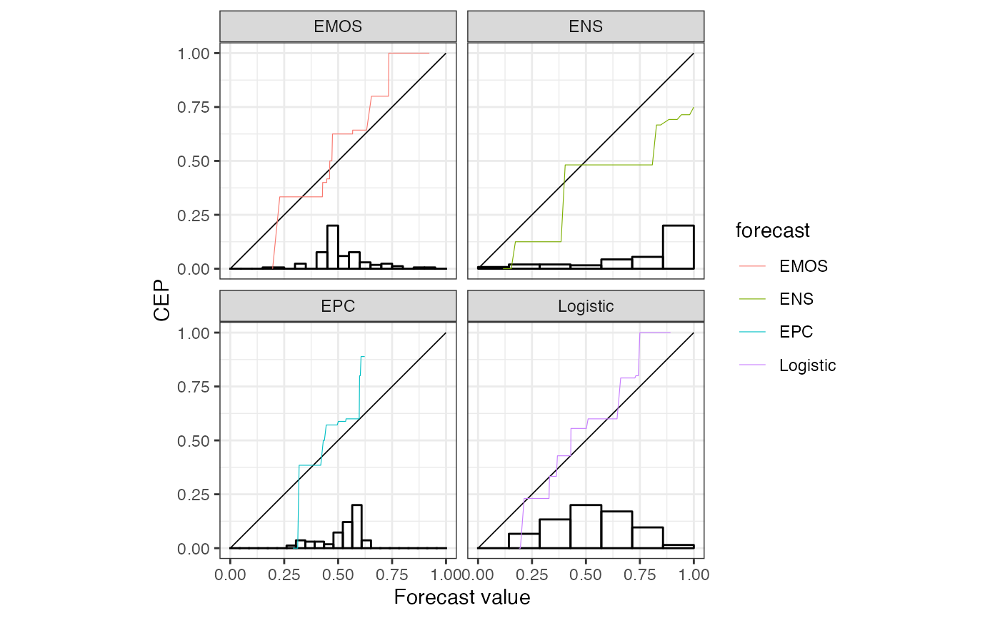
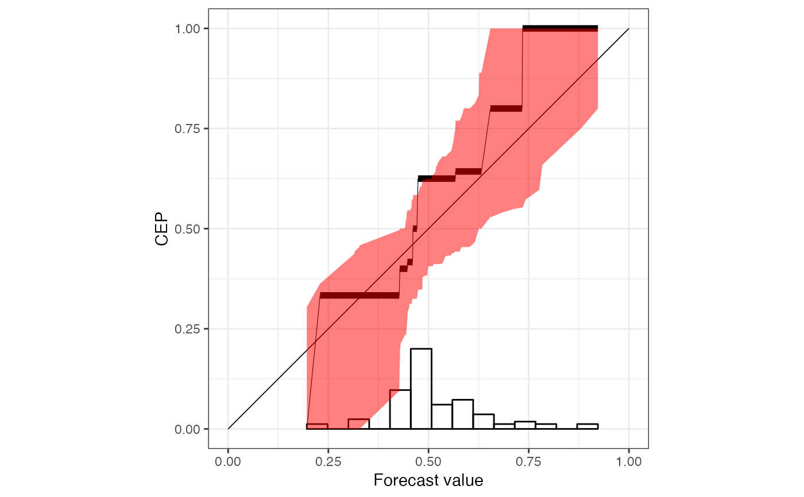
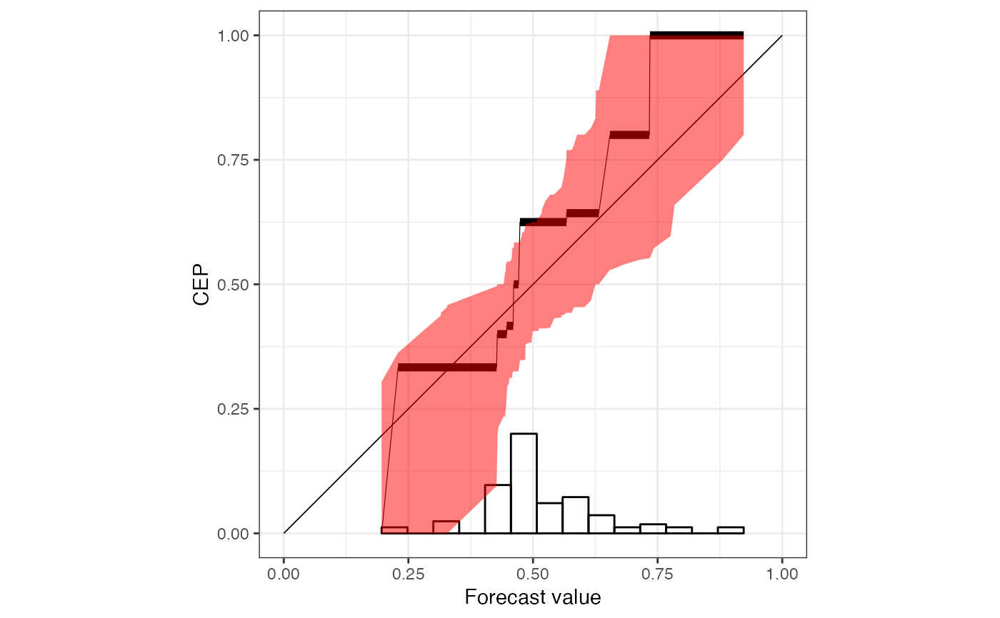

Using the ggplot2 package to visually diagnose the reliability of prediction methods that issue probability forecasts.
# S3 method for reliabilitydiag
plot(x, ...)
# S3 method for reliabilitydiag
autoplot(
object,
...,
type = c("miscalibration", "discrimination"),
colour = "red",
params_histogram = NULL,
params_ggMarginal = NULL,
params_ribbon = NULL,
params_diagonal = NULL,
params_vsegment = NULL,
params_hsegment = NULL,
params_CEPline = NULL,
params_CEPsegment = NULL,
params_CEPpoint = NULL
)
# S3 method for reliabilitydiag
autolayer(
object,
...,
type = c("miscalibration", "discrimination"),
colour = "red",
params_histogram = NA,
params_ggMarginal = NA,
params_ribbon = NA,
params_diagonal = NA,
params_vsegment = NA,
params_hsegment = NA,
params_CEPline = NA,
params_CEPsegment = NA,
params_CEPpoint = NA
)Arguments
- x
an object inheriting from the class
'reliabilitydiag'.- ...
further arguments to be passed to or from methods.
- object
an object inheriting from the class
'reliabilitydiag'.- type
one of
"miscalibration","discrimination"; determines which layers are added by default, including default parameter values.- colour
a colour to be used to draw focus; used for the CEP layers when
typeis"miscalibration", and for the horizontal segment layer and CEP margin histogram whentypeis"discrimination".- params_histogram
a list of arguments for
ggplot2::geom_histogram; this layer shows a histogram of the forecast values in the main plotting region.- params_ggMarginal
a list of arguments for
ggExtra::ggMarginal; used to show the marginal distributions of the forecast values and estimated CEP values by adding plots to the top and right of the main plotting region. If this is anything other thanNA, theautoplotoutput cannot be customized by with additional layers.- params_ribbon
a list of arguments for
ggplot2::geom_ribbon; this layer shows the uncertainty quantification results.- params_diagonal
a list of arguments for
ggplot2::geom_line; this background layer illustrates perfect reliability.- params_vsegment
a list of arguments for
ggplot2::geom_segment; this layer shows a vertical segment illustrating the average forecast value.- params_hsegment
a list of arguments for
ggplot2::geom_segment; this layer shows a horizontal segment illustrating the average event frequency.- params_CEPline
a list of arguments for
ggplot2::geom_line; this layer shows a linear interpolation of the CEP estimates.- params_CEPsegment
a list of arguments for
ggplot2::geom_segment; this layer highlights the pieces where the CEP estimate remains constant.- params_CEPpoint
a list of arguments for
ggplot2::geom_point; this layer highlights the CEP estimate only for actually observed forecast values.
Value
An object inheriting from class 'ggplot'.
Details
plot always sends a plot to a graphics device, wheres autoplot
behaves as any ggplot() + layer() combination. That means, customized
plots should be created using autoplot and autolayer.
Three sets of default parameter values are used:
If multiple predictions methods are compared, then only the most necessary information to determine reliability are displayed.
For a single prediction method and
type = "miscalibration", the focus lies on the deviation from the diagonal including uncertainty quantification.For a single prediction method and
type = "discrimination", the focus lies on the PAV transformation and the resulting marginal distribution. A concentration of CEP values near 0 or 1 suggest a high potential predictive ability of a prediction method.
Setting any of the params_* arguments to NA disables that layer.
Default parameter values if length(object) > 1,
where the internal variable forecast is used as grouping variable:
params_histogram | NA |
params_ggMarginal | NA |
params_ribbon | NA |
params_diagonal | list(size = 0.3, colour = "black") |
params_vsegment | NA |
params_hsegment | NA |
params_CEPline | list(size = 0.2) |
params_CEPsegment | NA |
params_CEPpoint | NA |
Default parameter values for type = "miscalibration" if length(object) == 1:
params_histogram | list(yscale = 0.2, colour = "black", fill = NA) |
params_ggMarginal | NA |
params_ribbon | list(fill = "blue", alpha = 0.15) |
params_diagonal | list(size = 0.3, colour = "black") |
params_vsegment | NA |
params_hsegment | NA |
params_CEPline | list(size = 0.2, colour = colour) |
params_CEPsegment | list(size = 2, colour = colour) if xtype == "continuous"; NA otherwise. |
params_CEPpoint | list(size = 2, colour = colour) if xtype == "discrete"; NA otherwise. |
Default parameter values for type = "discrimination" if length(object) == 1:
params_histogram | NA |
params_ggMarginal | list(type = "histogram", xparams = list(bins = 100, fill = "grey"), yparams = list(bins = 100, fill = colour)) |
params_ribbon | NA |
params_diagonal | list(size = 0.3, colour = "lightgrey") |
params_vsegment | list(size = 1.5, colour = "grey") |
params_hsegment | list(size = 1.5, colour = colour) |
params_CEPline | list(size = 0.2, colour = "black") |
params_CEPsegment | NA |
params_CEPpoint | list(colour = "black") |
Examples
data("precip_Niamey_2016", package = "reliabilitydiag")
r <- reliabilitydiag(
precip_Niamey_2016[c("Logistic", "EMOS", "ENS", "EPC")],
y = precip_Niamey_2016$obs,
region.level = NA
)
# simple plotting
plot(r)
# faceting using the internal grouping variable 'forecast'
autoplot(r, params_histogram = list(colour = "black", fill = NA)) +
ggplot2::facet_wrap("forecast")

# custom color scale for multiple prediction methods
cols <- c(Logistic = "red", EMOS = "blue", ENS = "darkgreen", EPC = "orange")
autoplot(r) +
ggplot2::scale_color_manual(values = cols)
 # default reliability diagram type with a title
rr <- reliabilitydiag(
EMOS = precip_Niamey_2016$EMOS,
r = r,
region.level = 0.9
)
autoplot(rr) +
ggplot2::ggtitle("Reliability diagram for EMOS method")
# default reliability diagram type with a title
rr <- reliabilitydiag(
EMOS = precip_Niamey_2016$EMOS,
r = r,
region.level = 0.9
)
autoplot(rr) +
ggplot2::ggtitle("Reliability diagram for EMOS method")
 # using defaults for discrimination diagrams
p <- autoplot(r["EMOS"], type = "discrimination")
print(p, newpage = TRUE)
# using defaults for discrimination diagrams
p <- autoplot(r["EMOS"], type = "discrimination")
print(p, newpage = TRUE)
 # ggMarginal needs to be called after adding all custom layers
p <- autoplot(r["EMOS"], type = "discrimination", params_ggMarginal = NA) +
ggplot2::ggtitle("Discrimination diagram for EMOS method")
p <- ggExtra::ggMarginal(p, type = "histogram")
print(p, newpage = TRUE)
# ggMarginal needs to be called after adding all custom layers
p <- autoplot(r["EMOS"], type = "discrimination", params_ggMarginal = NA) +
ggplot2::ggtitle("Discrimination diagram for EMOS method")
p <- ggExtra::ggMarginal(p, type = "histogram")
print(p, newpage = TRUE)
 # the order of the layers can be changed
autoplot(rr, colour = "black", params_ribbon = NA) +
autolayer(rr, params_ribbon = list(fill = "red", alpha = .5))

# the order of the layers can be changed
autoplot(rr, colour = "black", params_ribbon = NA) +
autolayer(rr, params_ribbon = list(fill = "red", alpha = .5))
